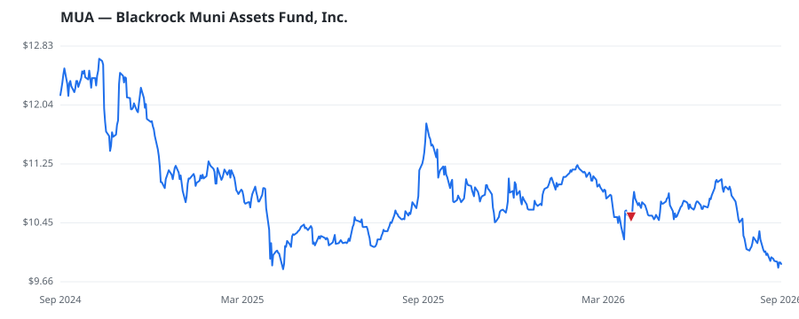

bullish · bearish · n/a — dots: price>SMA10 · SMA10>SMA50 · SMA50>SMA200 · up>down volume (20d)
Other · small cap

Blackrock Muniassets Fund Inc is a closed-end fund. Its objective is to provide high current income exempt from U.S. federal income taxes by investing in a portfolio of medium- to lower-grade or unrated municipal obligations. The Fund invests more of its total assets in municipal bonds. · website